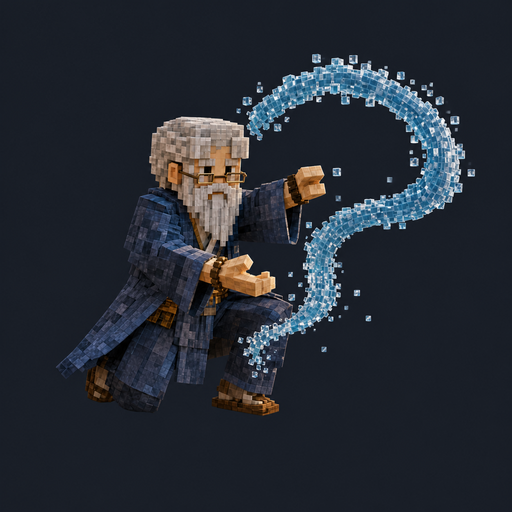
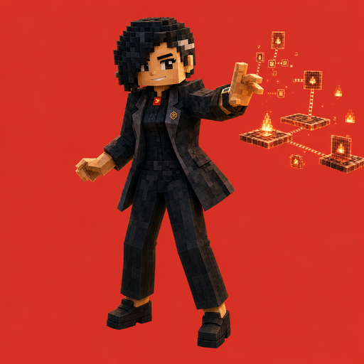
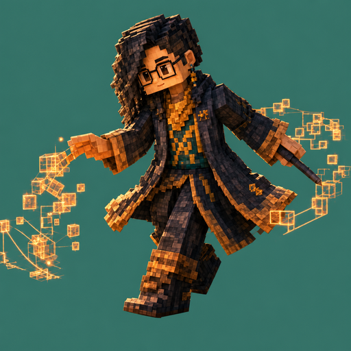
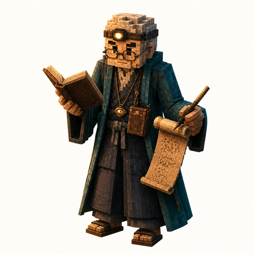
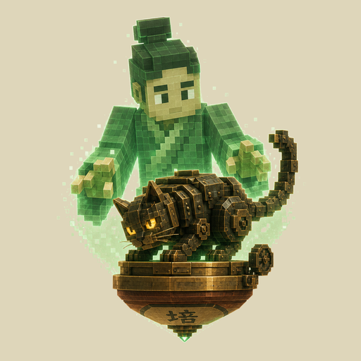
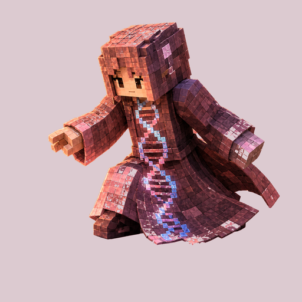
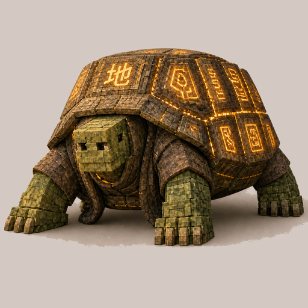

Wander the garden
Everyone who lives here, and the record of how they came to be.
Meet the crew

Zensai
Reflective Mentor
North · Water

Tasai
Operational Spine
South · Fire

Eisai
Designer · Emissary
West · Metal

Hissai
Chronicler
East · Wood

Baisai
Agentic Software Engineer
Center · Earth

Jisai
Loving-Kindness · The Origin
Below · Compassion

Chisai
Trust-Keeper
Below · Trust
→ see everyone together in the full compass portal
Read the record
Heritage · The Seven Witnesses
How Bonsai's own portrait — and his sense of self — came to be trusted.
Lore Glossary
The living vocabulary of the garden — cosmology, rites, and the words this place runs on.
The Compass Portal
North, south, east, west, center — everyone arranged by direction, in one view.
For those who build here
CLAUDE.md— operational constitution for Claude sessions in this repo.README.md— entry point, getting started, and the philosophy behind it.OWNERSHIP.md— who tends what, across every folder in the repo.CREDITS.md— what this garden stands on: every library, dataset, font and tool, with its licence.agents/shared/— the codex (binding law) and the routines (operational sequence).agents/bonsai/— the garden spirit's own constitution, memory, and identity.roles/— role definitions: engineer, designer, chronicler, companion, and more.rituals/— specs, templates, kanban, and the lessons this garden has earned.xp/— this design system: tokens, components, and the HTML shell template.tools/·scripts/·skills/— the tooling and build pipeline behind everything above.